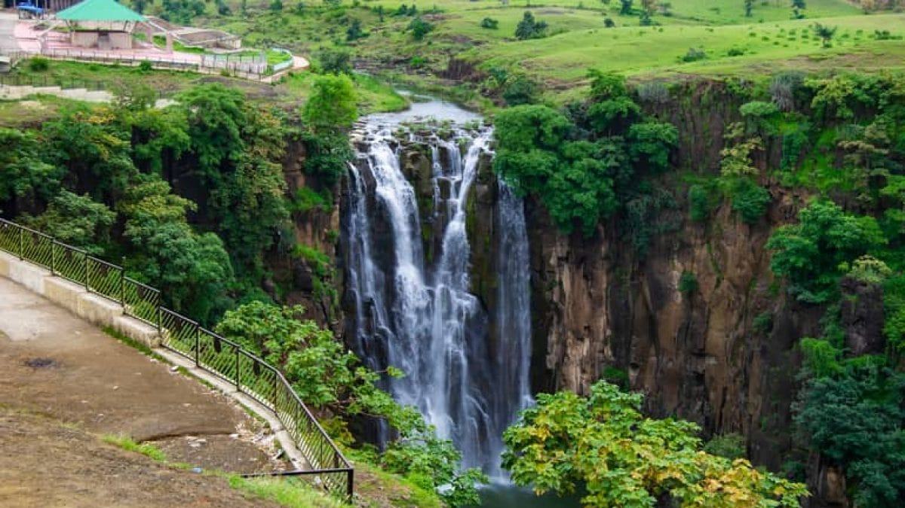
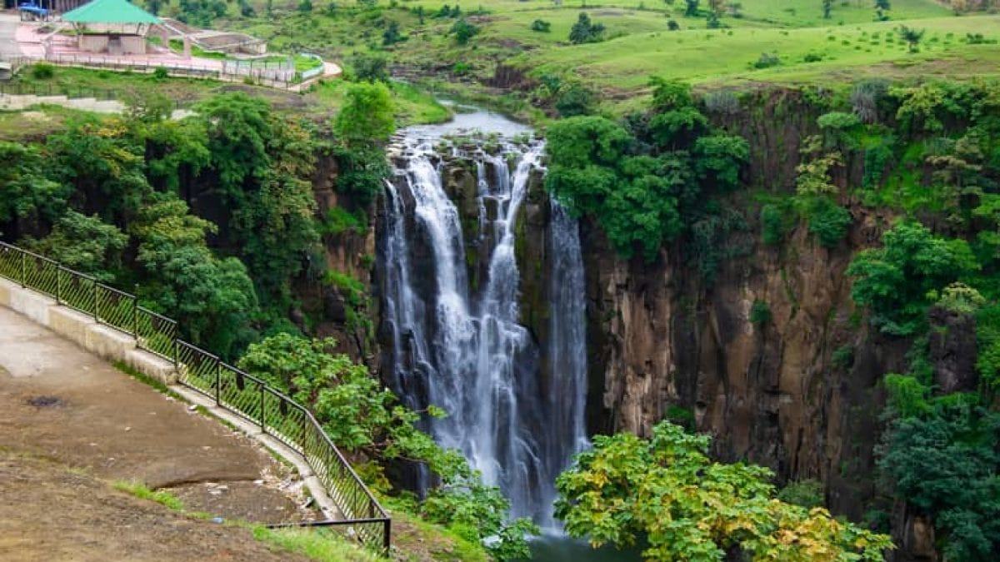

Exclusive, personalized, and unforgettable tours of Indore and beyond.
Explore Indore Start Your TripExplore places that are off the beaten path and experience the authentic culture of Indore.
Tailor-made tours to fit your needs.
Explore Local transportation and 24/7 support.
Experience the culture, food, and traditions of Indore.
"Serene Indore made my trip unforgettable. The guides were knowledgeable, and the service was impeccable!"
– Priya from Mumbai"I loved the personalized touch. Every little detail was handled, and Indore is such a beautiful city."
– John from SydneyIndore, a city of history, architecture, food, and culture, is a perfect blend of old and new. Known for its vibrant markets, majestic palaces, and delicious street food, it offers a unique experience for every traveler.
 
